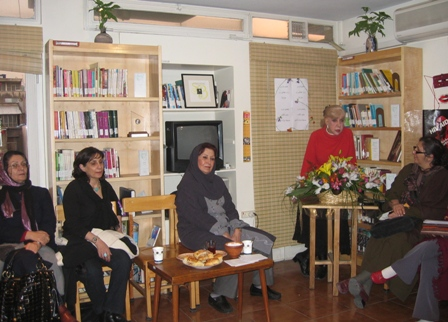

|
|
برگزاری مراسم تندیس کتاب «صدیقه دولت آبادی» در روز جهانی زن : هیج کتابی جایزه تندیس صدیقه دولت آبادی را نبرد
يكشنبه18 اسفند 1387
مدرسه فمنیستی:شنبه 17 اسفند مراسم بزرگداشت روز جهانی زن توسط کتابخانه صدیقه دولت آبادی با حضور پژوهشگران، فعالان، نویسندگان و هنرمندان حوزه زنان در محل کتابخانه برگزار شد. جایزه پنجمین دوره از تندیس صدیقه دولت آبادی به هیچ اثری تعلق نگرفت. سانسور ، خودسانسوری و نیز موانع بسیار دیگری در شرایط فعلی ایران موجب شد تا هیات داوران پنجمین دوره از جایزه ی "تندیس صدیقه دولت آبادی" از اعلام نام اثری که در خور این جایزه باشد؛ خودداری کنند .

شهلا لاهیجی،سیمین بهبهانی، شیوا دولت آبادی، نسترن موسوی ومریم حسینی و منصوره شجاعی ازاعضای هیئت امنا و تندیس دراین باره سخنانی ایراد کردند.
نسترن موسوی از اعضای هیات داوران در ادامه برنامه با خواندن بیانیه داوران پنجمین دوره از جایزه تندیس صدیقه دولت آبادی دلایل موفقیت آمیز نبودن آثار در رشته مطالعات زنان می گوید و افول کیفی اثار مطالعات زنان را نگران کننده می خواند: زمانی که رشته ی دانشگاهی مطالعات زنان از درون تهی می شود و رویکرد جنسیتی آن کنار گذاشته می شود چه گونه می توان انتظار داشت که مطالعات ارزنده ای با حساسیت های زنانه از دل آن بیرون بیاید . آن گاه که آزادی انتخاب موضوع برای پژوهش درباره زنان به لطایف الحیل تحدید می شود،چگونه می توان توقع داشت که مدرسان و دانشجواین این رشته نخستین تولیدکنندگان و مصرف کنندگان محصولات پژوهشی این عرصه باشند.
در حوزه ادبیات داستانی نیز هیچ کتابی در خور تندیس صدیقه دولت آبادی شناخته نشد و از میان 37 عنوان کتاب منتشر شده در سال 86 پنج مجموعه داستان و رمان به مرحله نیمه نهایی راه یافتند و از آنها تقدیر شد.
فرخ قره داغی ، نسترن موسوی، اميليا نرسيسيان و صبا واصفی، اعضای هیئت داوران تندیس صدیقه دولت آبادی امسال در حوزه مطالعات زنان بودند. همچنین بنفشه حجازی، مریم حسینی و نگار نادری اعضای هیئت داوران جایزه ادبیات داستانی صدیقه دولت آبادی امسال بودند.
سیمین بهبهانی درباره گرفتن جایزه سیمون دوبوارنیز سخن گفت و سپس شعری سرود. جایزه ای که چندی پیش بنیاد سیمون دوبوار کمپین یک میلیون امضا را شایسته دریافت این جایزه کرد. اکنون این لوح در کتابخانه صدیقه دولت ابادی به امانت گذاشته شده است. سیمین بهبهانی می گوید:این لوح افتخار بزگی برای همه زنانی است که در کمپین فعالیت دارند و جانشان را به خطر می اندازند که همه اینها در تاریخ هم ثبت می شود .
شیوا دولت آبادی روان شناس و عضو هیات علمی دانشگاه علامه طباطبایی هم از خاطرات عمه اش صدیقه دولت آبادی گقت اینکه با حضور و فعالیت هایش مفهوم زن،شکوه و قدرت را در ذهن تداعی می کرد .
کتابخانه که کار خود را با 2500 جلد کتاب آغاز کرده بود ؛ اکنون4500 کتاب دارد.